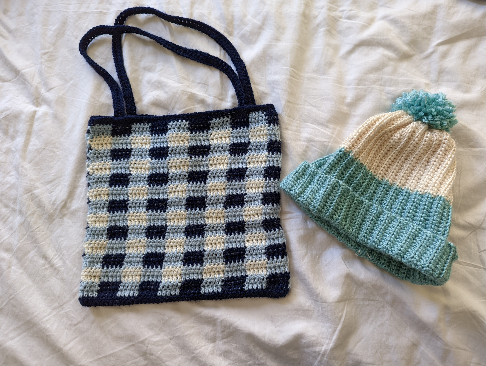
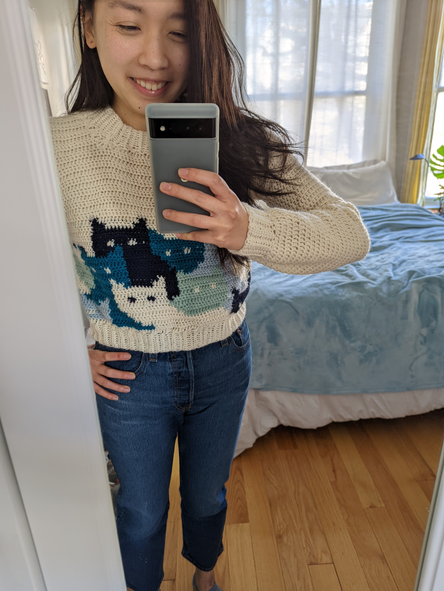
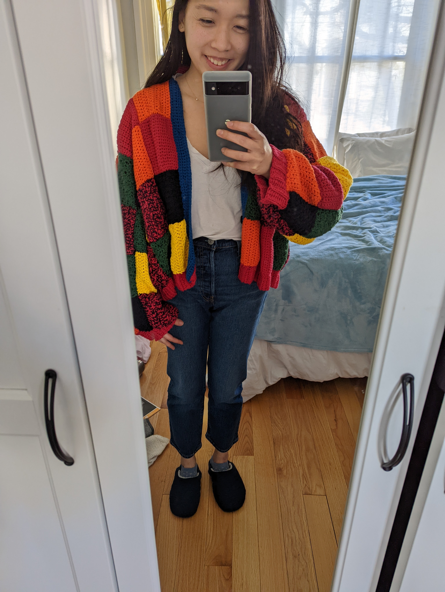
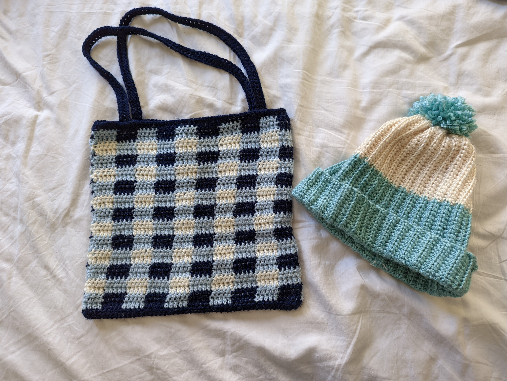
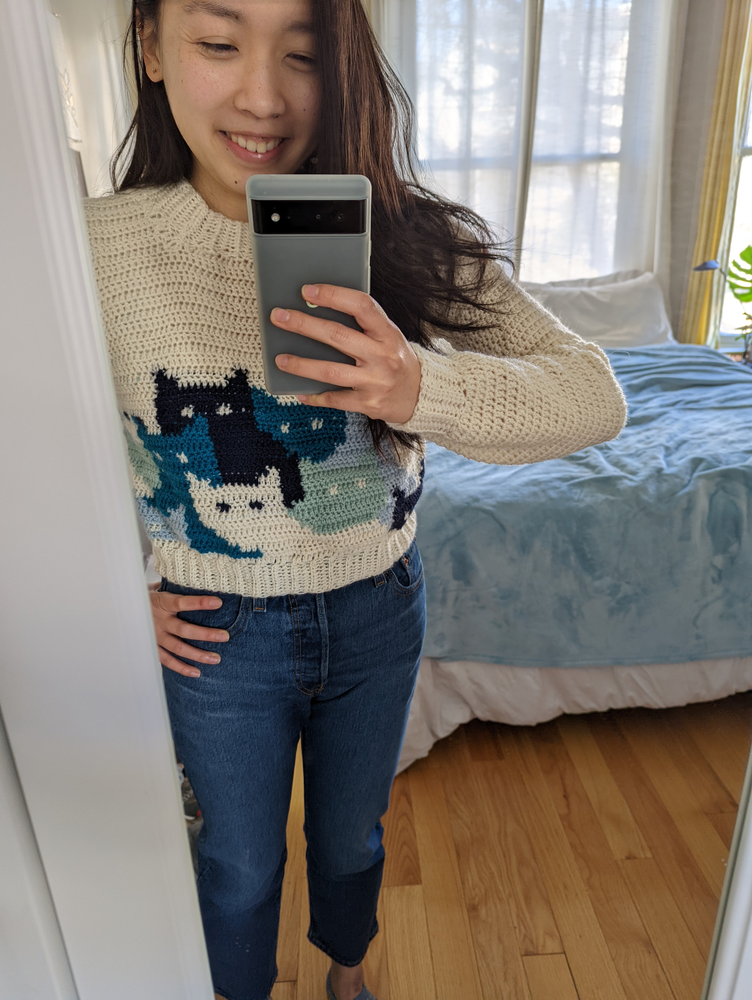
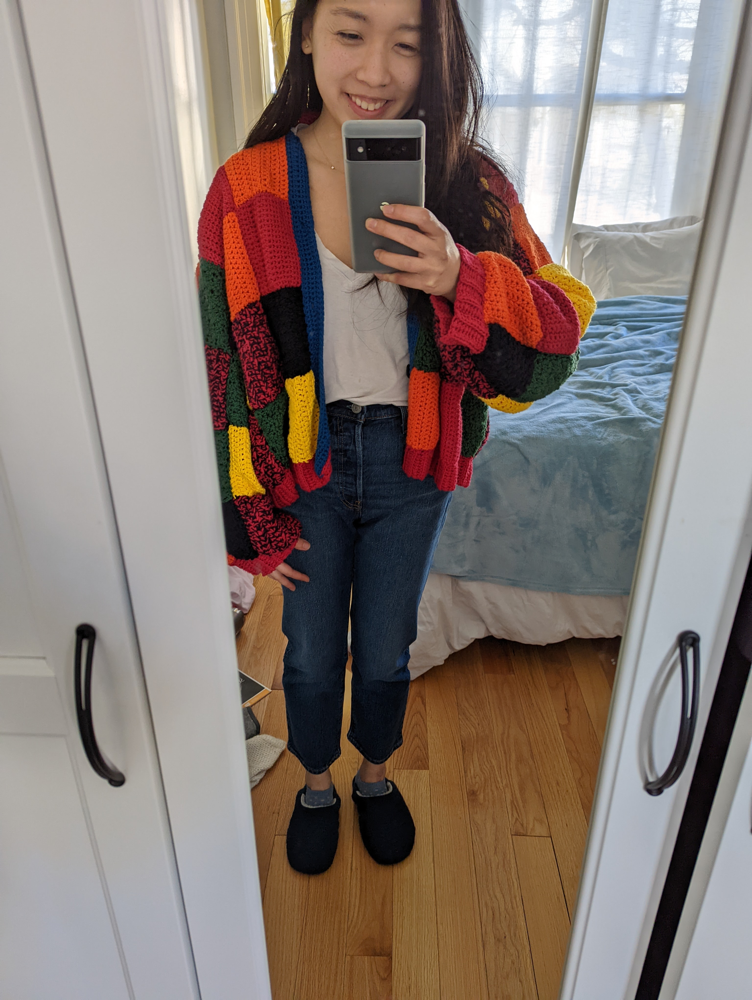

knitting & crocheting
In 2021, my friend taught me how to crochet. It's a hobby that I picked up really quickly, as I've always been drawn to different creative outlets.
Since then, I've also taught myself how to knit through various youtube videos (shoutout to Norman from Nimble Needles for having the best comprehensive guides) and have made various beanies, cardigans, scarves, sweaters, tank tops, and even blankets.
If you're interested in seeing more of my fiber projects, check out my ravelry!
Since then, I've also taught myself how to knit through various youtube videos (shoutout to Norman from Nimble Needles for having the best comprehensive guides) and have made various beanies, cardigans, scarves, sweaters, tank tops, and even blankets.
If you're interested in seeing more of my fiber projects, check out my ravelry!
 




